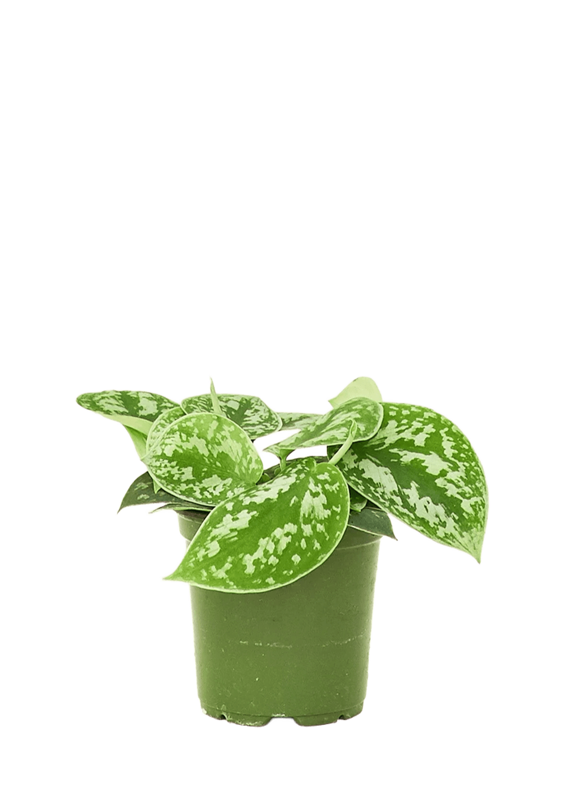

Medium to bright indirect light suits it best. It'll tolerate lower light and keep trailing, but the silvery speckling on the leaves — the whole point of this plant — gets much more pronounced with brighter light.
Let the top 1–2 inches of soil dry out between waterings. It's more drought-tolerant than a true pothos and much more likely to run into trouble from overwatering than underwatering, so when in doubt, wait a few more days.
Average home humidity is fine, though it'll grow a bit more vigorously with extra humidity. Normal indoor temperatures, roughly 65–80°F (18–27°C), are comfortable — just keep it away from cold windowsills in winter.
A balanced liquid fertilizer once a month during spring and summer is plenty. It doesn't need feeding in fall or winter.